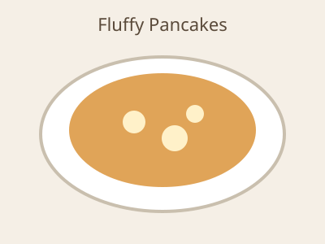

Home
Fluffy Pancakes

Description
These pancakes are thick, soft, and golden brown, with a light and fluffy texture. They make a cozy weekend breakfast.
Top them with butter and maple syrup, or add fresh fruit for extra color and sweetness.
Ingredients
- 1 1/2 cups all-purpose flour
- 3 1/2 tsp baking powder
- 1 tbsp sugar
- 1/4 tsp salt
- 1 1/4 cups milk
- 1 egg
- 3 tbsp melted butter
- 1 tsp vanilla extract
Steps
- Whisk the flour, baking powder, sugar, and salt together in a large bowl.
- In another bowl, mix the milk, egg, melted butter, and vanilla.
- Pour the wet mixture into the dry ingredients and stir until just combined. A few lumps are fine.
- Heat a lightly oiled pan over medium heat.
- Pour 1/4 cup of batter per pancake and cook until bubbles form, about 2 minutes.
- Flip and cook another 1 to 2 minutes until golden.
- Serve warm with butter and syrup.